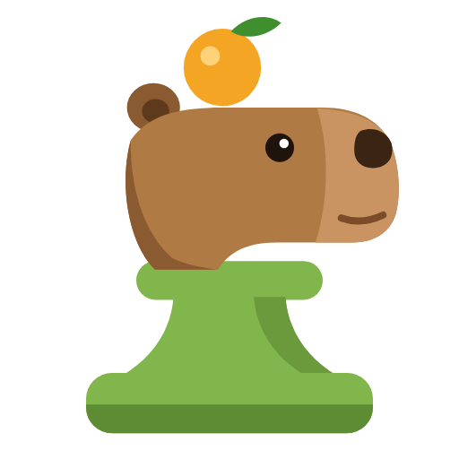

Baixe o Capivara
A análise de xadrez de graça, agora com ícone próprio no celular e no computador. Abre em tela cheia e funciona até sem internet.
Android
Instala direto pelo navegador, sem loja e sem arquivo para baixar.
- Abra esta página no Chrome, Brave ou Samsung Internet.
- Toque no menu ⋮ e depois em Instalar app ou Adicionar à tela inicial.
iPhone e iPad
A Apple não deixa instalar com um toque, mas leva só três passos:
- Abra esta página no Safari.
- Toque em Compartilhar (o quadrado com a seta para cima).
- Escolha Adicionar à Tela de Início e toque em Adicionar.
Pronto: o Capivara aparece na tela inicial como qualquer outro app.
Windows
O jeito mais fácil é instalar pelo navegador: funciona em qualquer Windows e atualiza sozinho.
Instalado! O Capivara já está no menu Iniciar.No Chrome, Edge ou Brave, clique no ícone de instalar no fim da barra de endereço, ou abra o menu do navegador e escolha Instalar Capivara.
Prefere um programa para instalar?
Baixar instalador (.exe)O programa ainda não tem assinatura digital. Se aparecer “O Windows protegeu o computador”, clique em Mais informações → Executar assim mesmo. Se o Controle Inteligente de Aplicativos bloquear, use o botão verde de cima.
O Capivara é de graça e não pede cadastro. Voltar para o site